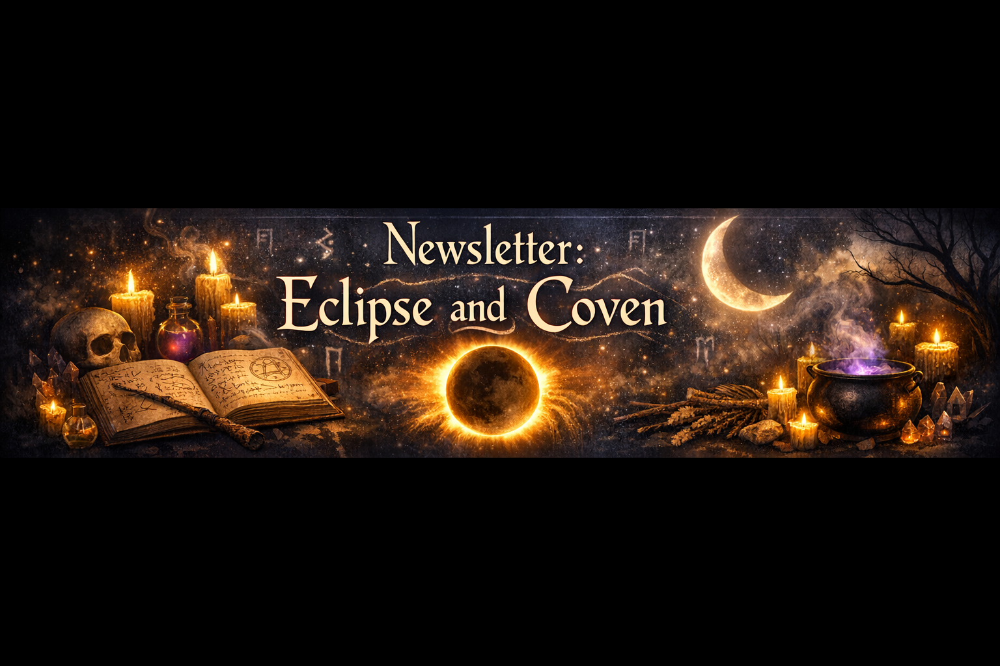
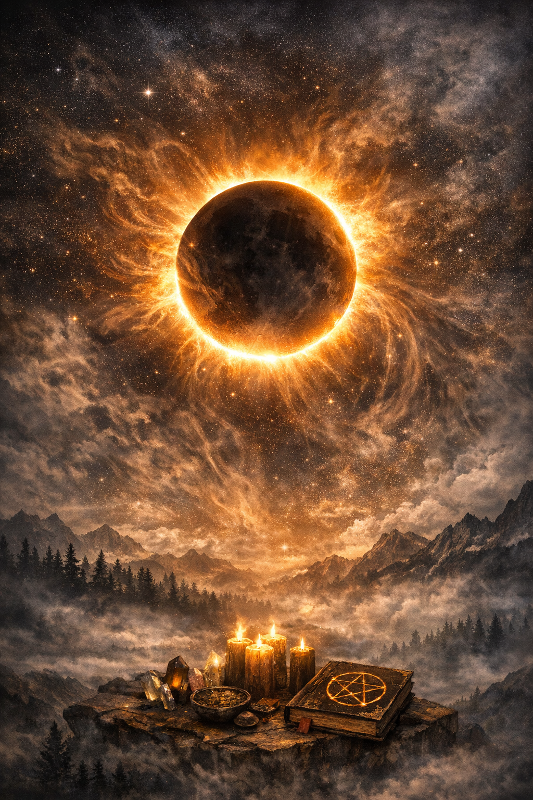
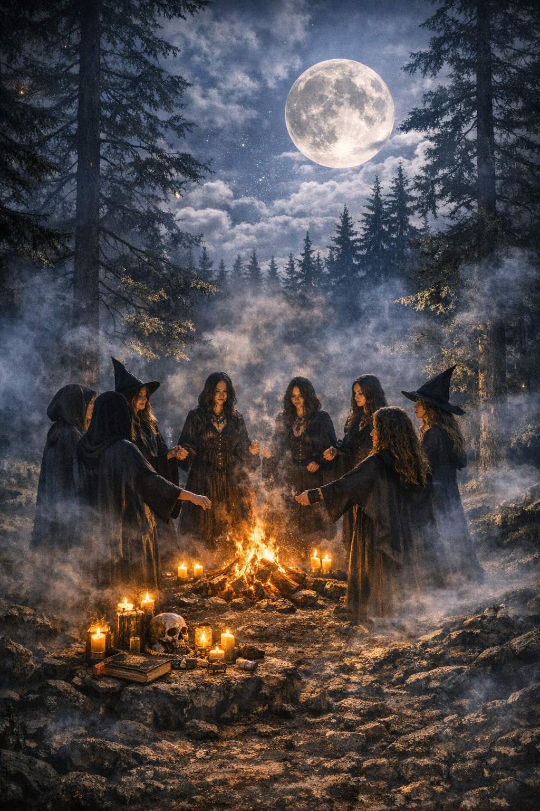

Newsletter: Eclipse and Coven
The Eclipse

In many witchcraft traditions, an eclipse is considered a moment of amplified power — a rare alignment when the sun and moon merge their energies, creating a liminal doorway between what is seen and what is hidden. Practitioners often use this time for shadow work, banishing rituals, and spells that require deep introspection. The sudden dimming of the world invites witches to confront what lies beneath the surface, making it an ideal moment to release old patterns, break lingering attachments, and set intentions that require courage. Eclipse water, charged under the shifting light, is believed to hold potent transformative energy and is often used in protection charms or divination rites.
Eclipse rites often include candle extinguishing, mirror scrying, and the crafting of shadow sigils — symbols meant to reveal truths normally hidden from the waking mind.
For covens, an eclipse is not merely an astronomical event but a sacred gathering. Many circles hold silent vigils as the moon overtakes the sun, honoring the temporary union of light and shadow. Others perform collective spellwork, weaving intentions together as the sky darkens, believing that shared magic during an eclipse binds the coven more tightly. Drums, chanting, and candlelit rituals are common, though some groups choose quiet meditation to honor the cosmic shift. Whether celebrated with ceremony or stillness, the eclipse is viewed as a celestial reminder that transformation often begins in darkness — and that even the sun must surrender to shadow before returning renewed.
The Coven Gathering

During the spring season, many witches honor the ancient celebrations connected to Ishtar — the Mesopotamian goddess of rebirth, fertility, and celestial power. Long before modern Easter traditions emerged, Ishtar’s rites centered on the returning light, the blooming earth, and the renewal of life after winter’s long slumber. Covens gathering under the full moon often weave these older traditions into their ceremonies, using eggs, flowers, and sacred fires as symbols of transformation. The rituals typically focus on awakening personal magic, blessing new beginnings, and honoring the cyclical nature of death and rebirth. While the modern world celebrates Easter with pastel colors and painted eggs, witches remember the deeper roots: a time when the goddess of the morning star was invoked to bring growth, passion, and renewal to all who walked the earth.
Traditional Ishtar Offerings
- Moon‑blessed eggs for renewal
- Fresh flowers symbolizing rebirth
- Incense offerings to the morning star